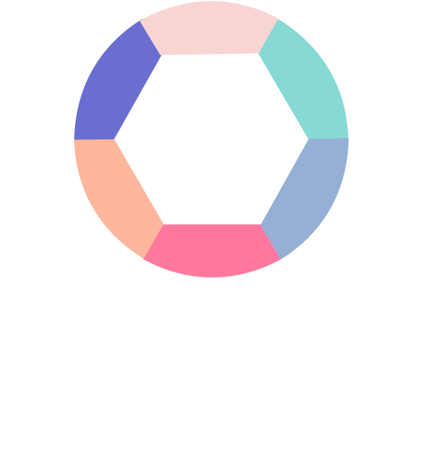
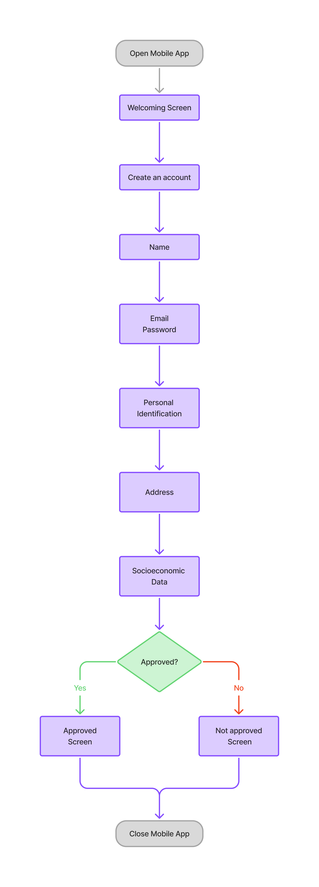
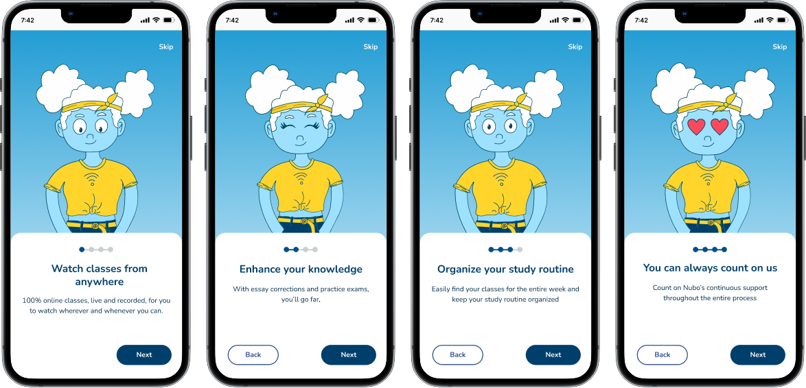
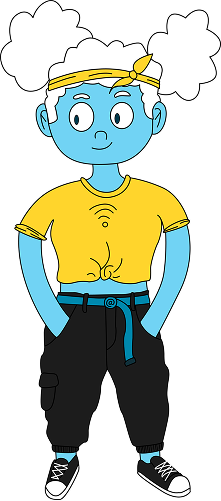

<!DOCTYPE html>
<html lang="pt-BR" data-theme="dark"></html>
<html lang="en">
<head>
  <meta charset="UTF-8">
  <meta name="viewport" content="width=device-width, initial-scale=1.0">
  <title>Lucas Lagoa | UX/UI and Front end prtfolio</title>
  <meta name="description" content="Front-end developer Lucas Lagoa's portfolio to share projects and skills developed.">

  <link rel="shortcut icon" href="assets/favicon_io/favicon-32x32.png" type="image/x-icon">
  <link rel="stylesheet" href="https://cdn.jsdelivr.net/npm/bootstrap-icons@1.10.5/font/bootstrap-icons.css">
  <link rel="stylesheet" href="assets/css/styles.css">
</head>
  <header class="header">
    <nav class="header__nav">
      <ul class="menu menu--principal">
        <li class="menu__item">
          <a class="menu__link active" href="index.html">
            <span class="menu__text">Home</span>
          </a>
        </li>
      </ul>
    </nav>
    <div class="header__brand">
      <a href="#home">
        
      </a>
    </div>
    <div class="header__toggle">
      <i id="toggleTheme" class="bi bi-sun"></i>
    </div>
  </header>


<body class="case1-page">

  <main class="case">
  <!-- HERO / INTRO -->
  <section class="case__intro">
    <h1>Nubo Admissions Redesign</h1>
    <p>
      A complete redesign of Nubo’s admissions process to reduce drop-offs, 
      accelerate evaluation, and create a more human, student-centered experience. 
      What used to be a 60+ question Google Form became a guided journey inside the app, 
      with Cloudinha — our friendly mascot — as a companion.
    </p>

    <div class="card__case1">
    
    </div>
    <!--  -->

    <div class="description__buttons">
      <a href="https://www.figma.com/proto/yCVNyeWdX6cvO3VZbRRoHL/Portolio-dev?page-id=3%3A382&node-id=34-5827&viewport=-4471%2C324%2C0.39&t=KhEmnXVoLDDeHvWz-1&scaling=min-zoom&content-scaling=fixed&starting-point-node-id=34%3A5782"
          target="_blank" 
          rel="noopener noreferrer"
          class="btn btn--primary">
          <span>Preview</span>
          <i class="bi bi-arrow-up-right"></i>
      </a>

    </div>
  </section>

  <!-- CONTEXT -->
  <section class="case__context">
    <h2>Context</h2>
    <p>
      At Nubo, many students abandoned the admissions process before finishing the 
      sign-up. The original form had more than 60 questions, and nearly 60% of applicants 
      gave up along the way. For internal teams, analyzing these answers was equally 
      exhausting, delaying approvals.
    </p>
    <p>
      With thousands of potential students dropping out at step one, it became urgent to 
      simplify the process — both to increase enrollments and to reduce the burden on 
      Growth and Data teams.
    </p>
  </section>

  <!-- OBJECTIVE -->
  <section class="case__objective">
    <h2>Objective</h2>
    <ul class="card__list">
      <li>Increase completion rate to at least 80%.</li>
      <li>Reduce internal workload by moving non-essential questions post-approval.</li>
      <li>Respect technical feasibility and deliver within two months.</li>
    </ul>
  </section>

  <!-- ANALYSIS & STRATEGY -->
  <section class="case__strategy">
    <h2>Problem Analysis & Strategy</h2>
    <p>
      We worked closely with Growth and Data to map which questions were truly 
      eliminatory and which were only informative. This analysis guided us to split the 
      flow into two stages: an initial 16-question approval step inside the app, and a 
      post-approval profile with the remaining questions.
    </p>
    <p>
      We benchmarked onboarding experiences from Duolingo, Busuu, Descomplica, 
      Estuda.com, Gran Questões, and others. Language apps like Duolingo inspired 
      simplicity, but we decided to follow models closer to Descomplica, since its 
      context — preparing students for exams — matched ours more closely.
    </p>

    <!-- Optional comparison image (before vs. after form length) -->
    <!--  -->
  </section>

  <!-- PROCESS -->
  <section class="case__process">
    <h2>Design Process</h2>
    <p>
      The flow was organized into clear blocks: account creation, introduction to 
      Cloudinha, personal identification, address, socioeconomic data, and a final step 
      to join a WhatsApp group. This mirrored familiar mental models and made the 
      journey feel lighter and structured.
    </p>
    <p>
      Visually, we adopted the Nunito typeface for readability and warmth, and applied 
      Nubo’s light blue palette — strongly tied to Cloudinha’s identity. Each section was 
      kept concise and empathetic, so the experience felt like a guided conversation 
      instead of an interrogation.
    </p>

    <div class="user-diagram">
      
    </div>

    <div class="wireframes-case1">
      
    </div>
  </section>

  <!-- INTERACTIONS & ERROR STATES -->
<section class="case__interactions">
  <h2>Interactions & Error States</h2>
  <p>
    Beyond the happy path, we carefully designed error states and microinteractions. 
    These details help students understand what went wrong, how to fix it quickly, 
    and reduce frustration during a stressful admission moment.
  </p>

  <div class="name__screen">
    
    
  </div>

  <div class="id__screen">
    
    
  </div>

  <div class="address__screen">
    
    
  </div>
</section>


  <!-- CLOUDINHA -->
  <section class="case__mascot">
    <h2>Cloudinha as a Guide</h2>
    <p>
      Inspired by Duo from Duolingo, Cloudinha was integrated as a friendly companion 
      throughout the journey. She introduced herself to students, encouraged them to 
      keep going, and made the process feel less lonely during a stressful moment.
    </p>
    <p>
      Technical constraints limited the number of poses and placements we could 
      implement, but even small appearances made a significant emotional impact.
    </p>

    <!-- Optional mascot showcase -->
    <div class="cloudinha">
      
    </div>
  </section>

  <!-- CHALLENGES -->
  <section class="case__challenges">
    <h2>Challenges & Trade-offs</h2>
    <ul class="card__list">
      <li>A very tight deadline: kickoff in January, go-live by March 8.</li>
      <li>No animations or gamification due to technical scope limits.</li>
      <li>Fewer Cloudinha variations than planned, adjusted to dev feasibility.</li>
      <li>Continuous negotiation with Growth and Data to keep the first step lean.</li>
    </ul>
  </section>

  <!-- RESULTS -->
  <section class="case__results">
    <h2>Results</h2>
    <ul class="card__list">
      <li>Average completion time: ~3 minutes.</li>
      <li>Perceived failure rate: only 0.148% (well below the 1% benchmark).</li>
      <li>Completion rate for 2025 admissions: 100% of 3,415 applicants.</li>
      <li>Spontaneous praise from both students and internal teams.</li>
    </ul>

    <!-- Optional results graph/visualization -->
    <!--  -->
  </section>

  <!-- LEARNINGS -->
  <section class="case__learnings">
    <h2>Learnings</h2>
    <ul class="card__list">
      <li>Simplifying often means cutting — less is truly more.</li>
      <li>Frequent alignment with engineering prevents rework.</li>
      <li>Even under a CTO-led bridge, clear UX feedback accelerates decisions.</li>
      <li>Empathy matters most when students are under pressure.</li>
    </ul>
  </section>

  <!-- ROLE -->
  <section class="case__role">
    <h2>My Role</h2>
    <p>
      I led the end-to-end UX for the admissions redesign. I ran competitive 
      benchmarking (Duolingo, Busuu, Descomplica, Estuda.com, Gran Questões, etc.) and 
      translated insights into flow hypotheses. With Growth and Data, I mapped which 
      questions were truly gating vs. informative, enabling us to cut the initial form to 
      16 fields without losing decision criteria.
    </p>
    <p>
      I defined a block-based structure (account, personal ID, address, socioeconomic, 
      WhatsApp) aligned to familiar mental models, and designed how the Cloudinha mascot 
      shows up as an empathetic guide to reduce anxiety and drive completion. I produced 
      low-fi wireframes, clickable prototypes that sped up engineering alignment, and the 
      final UI (hierarchy, Nunito type, brand light-blue, form components).
    </p>
    <p>
      Under a tight deadline (go-live on March 8), I prioritized high-impact decisions and 
      negotiated trade-offs (fewer mascot variations, no gamification) to protect quality. 
      During build, I joined rituals with the CTO and partner teams, bringing concise UX 
      feedback to unblock feasibility, error states, and microcopy. The outcome was a 
      shorter, clearer, more human flow — ~3-minute average session time, very low 
      perceived failure, and strong qualitative feedback from students and staff.
    </p>

    
  </section>

  <!-- CTA -->
  <section class="case__cta">
    <div class="description__buttons">
      <a href="https://www.figma.com/proto/yCVNyeWdX6cvO3VZbRRoHL/Portolio-dev?page-id=3%3A382&node-id=34-5827&viewport=-4471%2C324%2C0.39&t=KhEmnXVoLDDeHvWz-1&scaling=min-zoom&content-scaling=fixed&starting-point-node-id=34%3A5782" target="_blank" rel="noopener noreferrer">
          <button class="btn btn--primary">
            <span>Preview</span>
            <i class="bi bi-arrow-up-right"></i>
          </button>
       </a>
      <a href="#" class="btn btn--primary"><span>Next case</span></a>
    </div>
  </section>
</main>


    <footer>
        <p>
        © 2025. All rights reserved. Lucas Lagoa. Developed for <a href="https://github.com/llagoa">LL</a>.
        </p>
  </footer>
   <script src="assets/js/scripts.js"></script> 
</body>
</html>